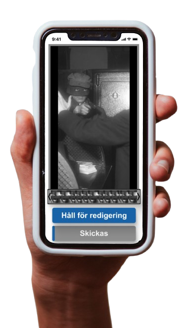
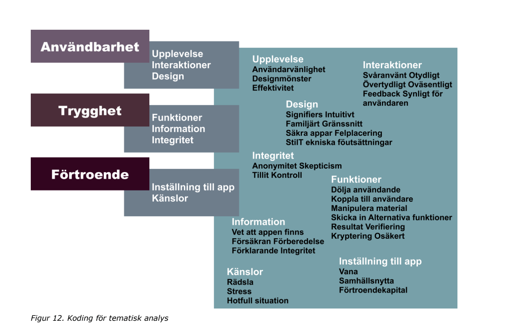

← All projects / 2Witness
2Witness
This application was developed in collaboration with the company 2Witness and served as the foundation for the thesis project in the Bachelor's program in Interaction Design at Stockholm University. The app's primary function is to allow users to anonymously report crimes through video, audio, and photos, which can then be sent directly to the police. To encourage users to submit material, the app ensures complete anonymity throughout the entire process.

Concept
Problem
There is a growing desire to report crimes anonymously, and in this context, documentation in the form of video, photos, or audio recordings serves as valuable evidence. To facilitate this, the company 2witness is developing an app that allows users to submit evidence directly from a crime scene to authorities.
Design Process
Workshops
To define the necessary functions for the prototype, a workshop was conducted with employees at 2witness, including some who represented future users to capture both perspectives. The goal was to identify functional requirements and desirable features and core functionalites for the intended user experience.
The workshop consisted of four exercises: Crazy 8, Storyboarding, How Might We (HMW), and Worst Possible Idea (WPI).
Crazy 8
A fast-paced brainstorming exercise where participants generate eight ideas in eight minutes to encourage creativity and uncover unexpected solutions.
Storyboarding
Participants illustrated usage scenarios, visualizing user interactions and identifying opportunities for improvement.
How Might We
This method reframed identified problems into design questions (e.g., “How might we minimize the number of clicks in the app?”) to inspire practical solutions.
Worst Possible Idea
Participants listed the worst possible solutions, then inverted them to highlight critical functional requirements.
Workshop Results
The workshops resulted in a compiled requirements table (fig. Requirements Table), from which we developed a function decomposition diagram showing physical interactions, UX elements, frames, and alternative solutions.


Usability tests, prototyping & Interviews
Based on the function decomposition diagram, two prototypes were produced on which we performed usability tests and Interviews to compare functionalites.
Usability tests
After trying out each prototype , the users were asked to rate their experience of the different parts of the prototypes on a Likert scale between 1–7. A number of questions were evaluated with yes or no answers. Below are a few examples of how users rated each functions.
Interviews
While trying out the prototypes, the test-subjects were encouraged to share thoughts about the prototypes and their functions. This was followed by a short, semi-structured interview with questions such as:
- If you had access to an application where you could send evidence from a crime scene with a single click, how would anonymity and the ability to prevent the material from being traced back to you affect your sense of safety?
- In what way?
- Did you feel that the applications successfully conveyed a sense of security?
- How did you experience the two different prototypes? Was there any difference in how safe/secure you felt using each?
- What influenced this? Anything that stood out in each?
- How did you experience the design and color? What words would you associate with it?
- Anything else you have thought of or would like to add?

The interviews were encoded using thematic analysis, and resulted in a bunch of categories consisting of code clusters, that identified the overall experecience of the app. The results from the usability tests and the interviews were used when creating the final prototype and answearing our research question:
- How does interaction design affect the perceived security of using an application focused on anonymous evidence collection?
My Role
Facilitated co-design workshops with stakeholders and users. Translated insights into detailed functional requirements. Identified target users and conducted usability tests. Designed and iterated Figma prototypes reflecting user feedback and requirements.
Results
The images shown below are some of the features implemented in the final prototype and are based on the findings done in the usability tests and the interviews.